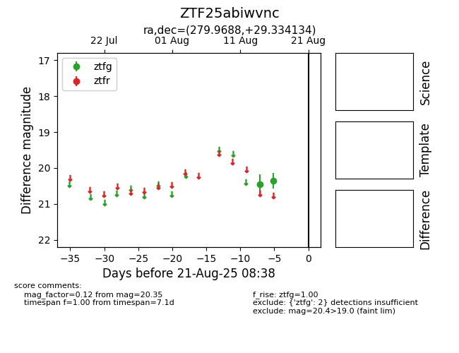

Target ZTF25abiwvnc at 2025-08-21 08:38, see:
FINK: fink-portal.org/ZTF25abiwvnc
Lasair: lasair-ztf.lsst.ac.uk/objects/ZTF25abiwvnc
ALeRCE: alerce.online/object/ZTF25abiwvnc
alt names
ZTF25abiwvnc (ztf,alerce)
coordinates:
equatorial (ra, dec) = (279.9688,+29.33413)
galactic (l, b) = (58.4680,+15.21931)
photometry
last ztfg=20.35
2 ztfg detections
